Robot Camera Frame
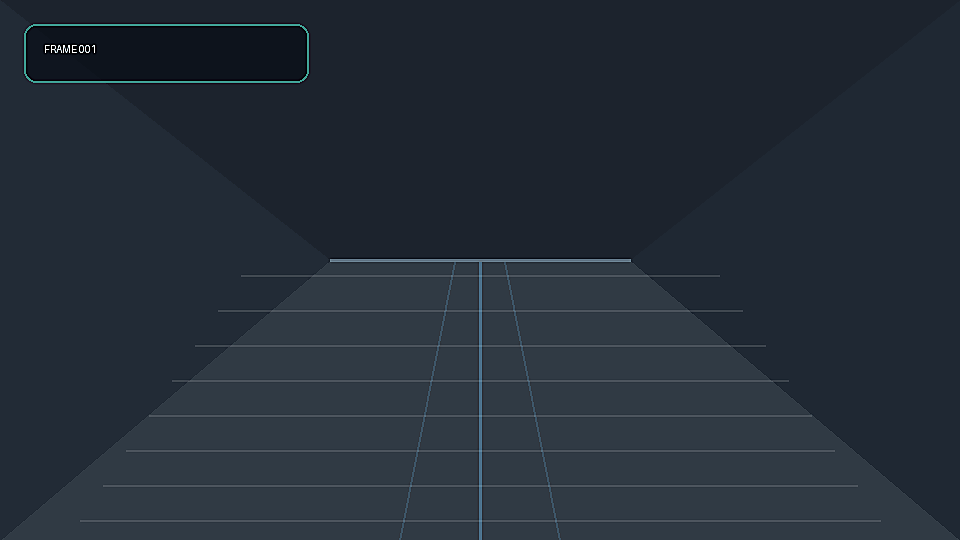
A local VLM-style module interprets robot camera frames, combines them with mocked navigation context, and contributes semantic costs for safer social navigation.
The VLM does not control the robot. It converts visual and navigation context into semantic costmap updates. A deterministic planner still makes the final path decision.
Baseline and enhanced paths are nearly identical because no social risk is visible.

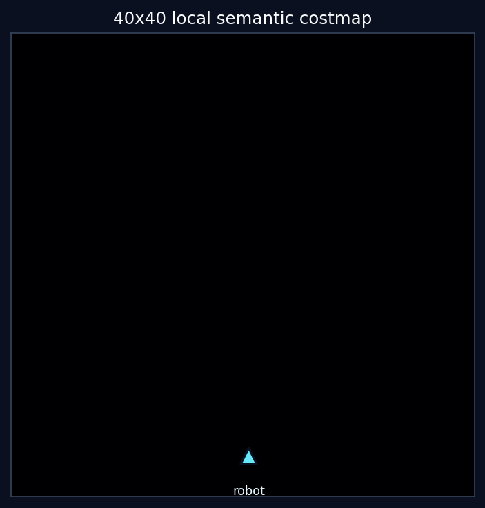
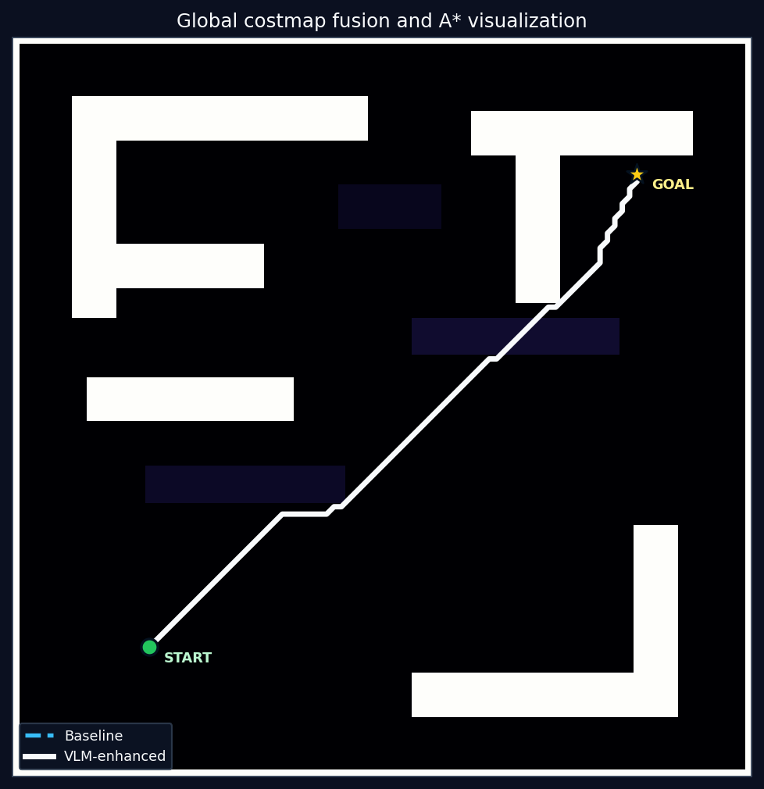
The replayed VLM JSON adds personal-space cost and extends it in the person's facing direction.
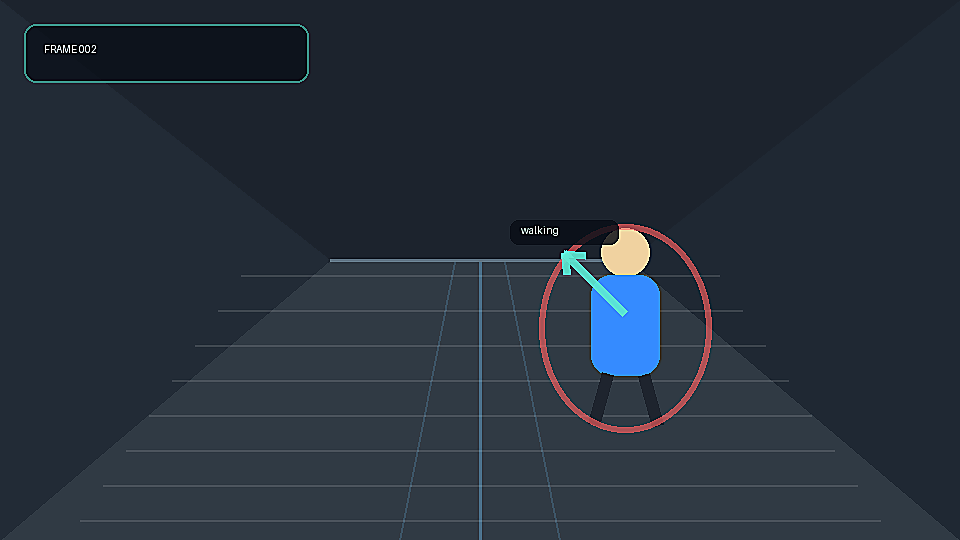
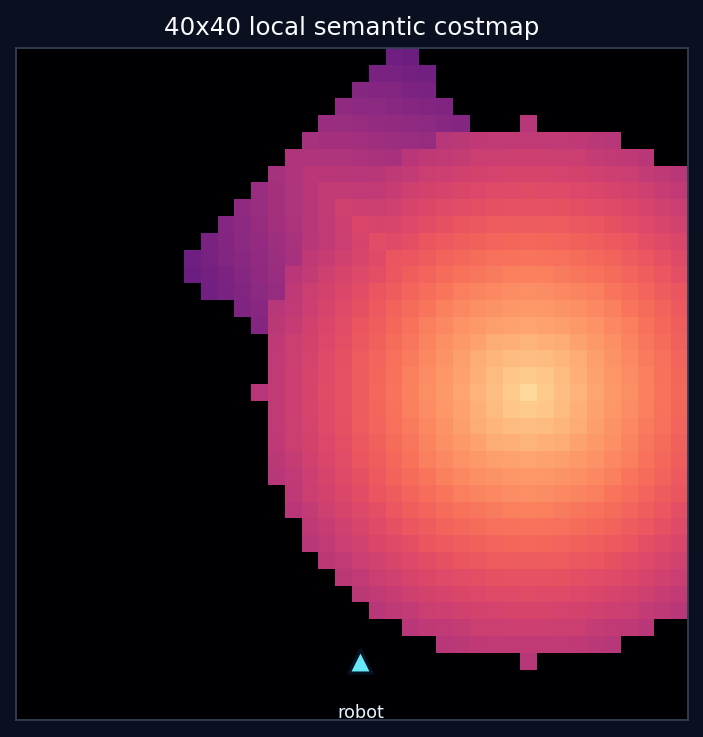
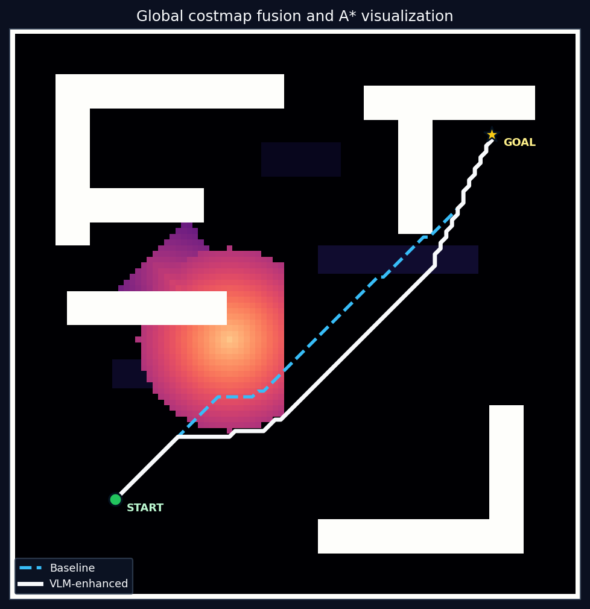
Medium semantic caution zones bias the route away from uncertain space.
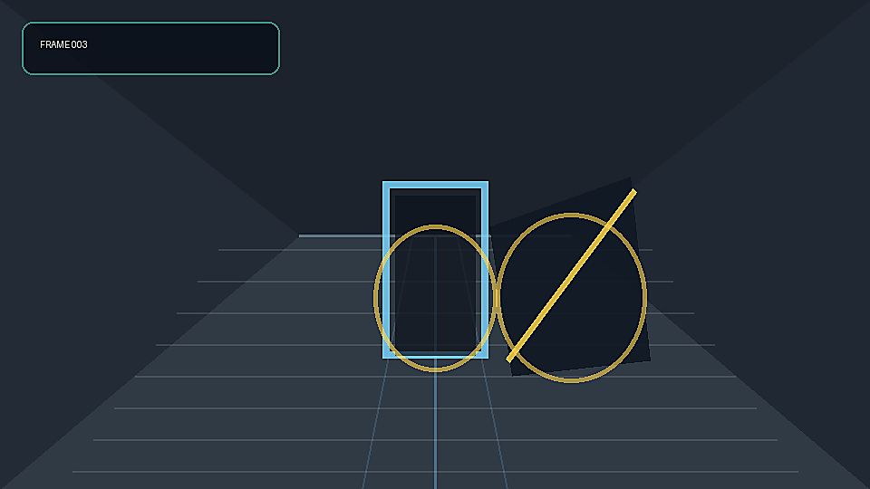
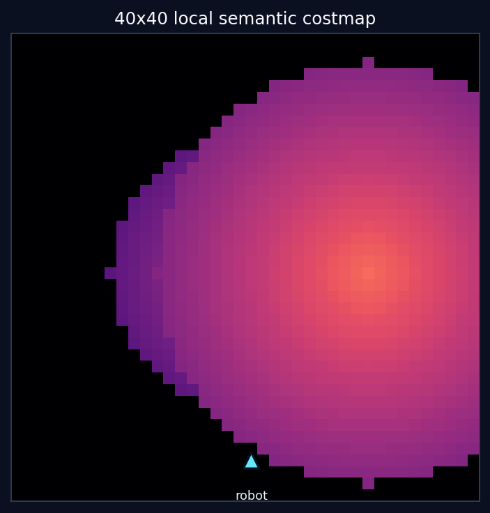
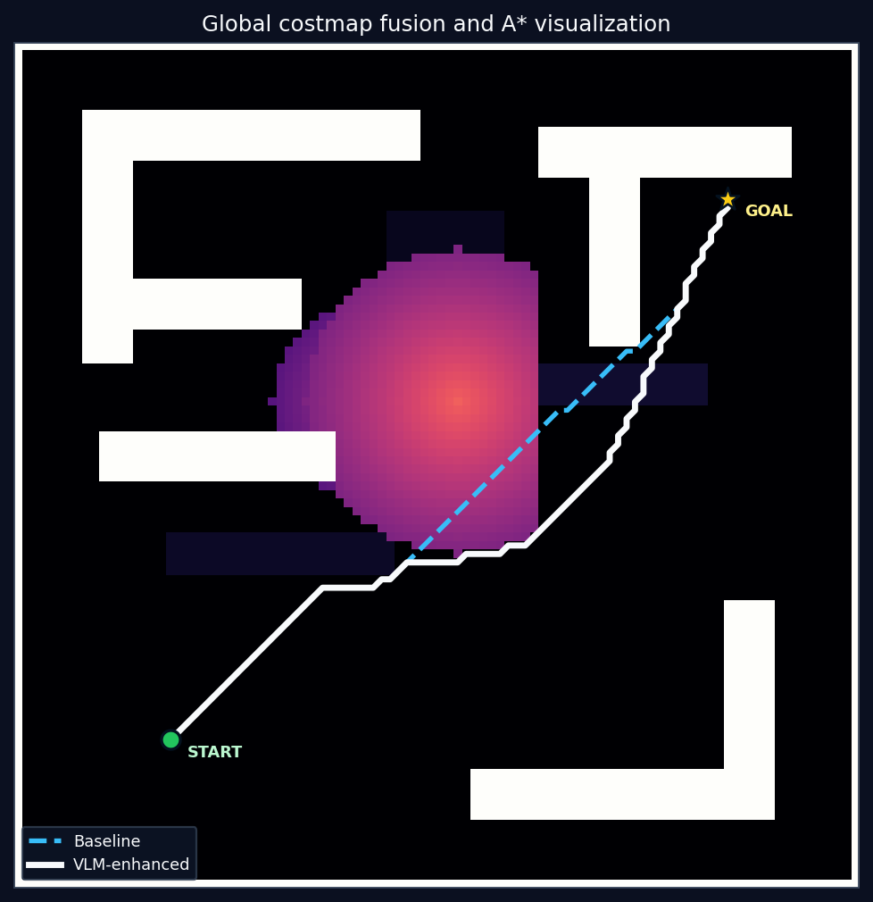
A larger social zone makes the enhanced path longer but lower risk.
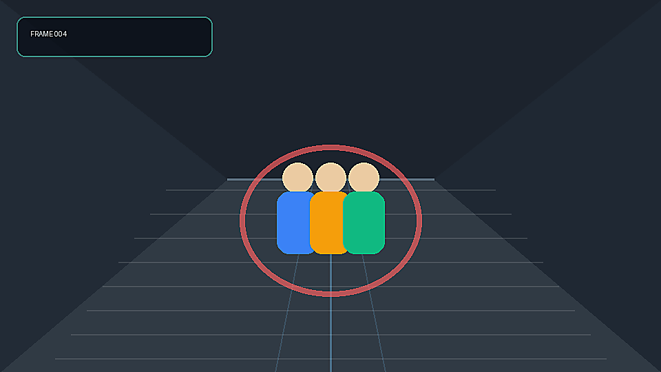

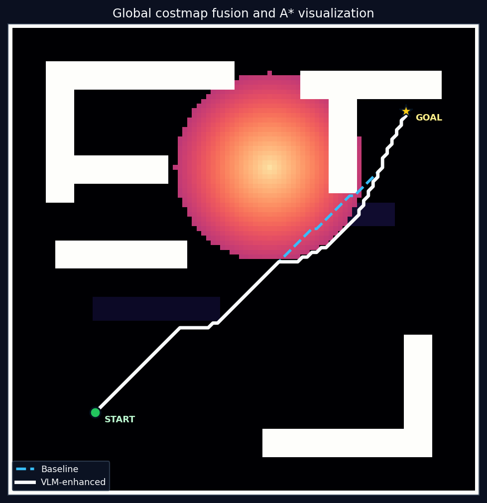